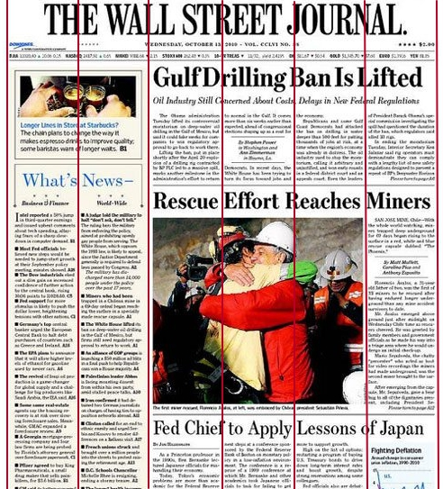
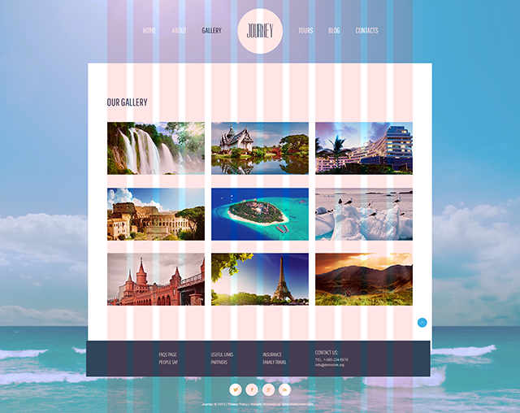

Модуль 9 - Теорія
Поняття модульної сітки
Загляньте в журнал або газету. У журналі інформація традиційно розділена на дві колонки, а в газеті - на три-чотири, а то й більше. Наприклад, сторінка Wall Street Journal розділена на 6 колонок. Зауважте, як пропорційно виглядає ця сторінка, навіть відстань між колонками рівне. Це все завдяки сітці.
Навіщо ми дивимося на газету? Веб-дизайн досить багато різних «фішок» успадкував від поліграфічного дизайну. Це і принципи роботи зі шрифтами, і правила композиції, і сітки з модулями. Саме завдяки поліграфії ми сьогодні насолоджуємося зручністю модульних сіток в інтернеті.
Модульні сітки в веб-дизайні
Модульні сітки — система верстки, яка будує певну композицію вашого сайту. Модульна сітка в web-дизайні є єдиною схему розташування всіх елементів і блоків сайту. Цей каркас проходить через все веб-сторінки і допомагає створити візуальний порядок на сайті.
Ви вже створювали за допомогою html-тегів таблиці, тому таке порівняння буде для вас як не можна до речі. Адже сітку фреймворка можна порівняти зі звичайною таблицею. По суті, модульна сітка являє собою набір вертикальних (можливо і горизонтальних) ліній, до яких прив'язані основні елементи сайту. Використання модульної сітки актуально для всіх сучасних сайтів. Веб-сторінка фактично розглядається як набір прямокутних блоків, які викладаються в певному порядку. При цьому, як правило, дані розташовуються по колонках.
У макеті модульна сітка являє собою набір невидимих напрямних, уздовж яких розташовуються елементи веб-сторінки.
Переваги сітки
Швидкість і точність верстки: коли верстальник пише css, немає необхідності вираховувати ширини елементів інтерфейсу, досить задати потрібну кількість колонок для елементів інтерфейсу.
Скорость и точность вёрстки: когда верстальщик пишет css, нет необходимости высчитывать ширины элементов интерфейса, достаточно задать нужное количество колонок для элементов интерфейса.
Збалансованість і пропорційність: сітка забезпечує візуальну зв'язок між окремими блоками і зберігає спадкоємність дизайну при переході від однієї сторінки до іншої. Елементи в макеті порівнянні й пропорційні між собою. Користувач чітко виділяє розділи та підрозділи документа.
Види сіток
- Блокова (manuscript grid) - самий простий вигляд сітки. Являє собою грубо розмічену область - блок.
- Колоночная (column grid) - має колонки в своїй структурі.
- Модульна (modular grid) - складається з пересічних прямих, які утворюють модулі. Модульна ж сітка має не тільки вертикальне членування, а й горизонтальне. Таким чином, те, що виходить на перетинах прямих, і є модуль.
- Ієрархічна (hierarchical grid) - сітка з інтуїтивним розміщенням блоків, без будь-якої логічної структури.
Нам цікаві колоночная і модульна сітки, по суті, вони схожі, модульна це розширення колоночной.
Робота з сіткою при верстці
Перед тим як почати знайомитися з сітками, розберемося з "типами" сітки в psd-макеті. Їх всього два, і для верстальника між ними немає особливої різниці. Отже, перший тип це коли сітка зроблена напрямними в Photoshop. Така сітка потрібна для дизайнера, так як на ній зручно малювати. Другий тип, це просто картинка з колонками, яка накладається поверх всіх шарів макета.
Елементи сітки
Для початку треба засвоїти, що сітка складається з:
- Контейнера (container) - обертається блок-контейнер, з ним ми вже знайомі з минулого модуля. Саме йому ми задаємо min і max width. Вся сітка повинна розташовуватися в загальному контейнері.
- Рядок (row) - виступає контейнером для основного вмісту. У рядках ніякої контент не розміщується, та й стилі до них не застосовуються. Вони лежать безпосередньо всередині container і займають 100% його ширини.
- Колонок (ячеек, columns) - лежать всередині row. Вони і є міра ширини елемента інтерфейсу. Наприклад, якщо на макеті стаття займає 3 колонки в ширину, то і нам потрібно буде просто вказати при верстці ширину в 3 колонки, як це робиться ми подивимося далі.
- Зазори (gutters) - як і в друкарні, між колонками є зазори. Вони не є обов'язковими, але найчастіше використовуються, для стандартизації відступів між елементами інтерфейсу. При необхідності їх можна прибрати.

Основних величини три - це ширина сітки, ширина колонки (залежить від їх кількості), і ширина проміжку між колонками.
Приклад
Якщо ми говоримо про сторінки галереї з нашого веб-сайту, то можна розділити її на чотири рядки - шапка, блок для основного контенту галереї і два рядки на підвал. Думаю, ви вже бачите, як зручно елементи інтерфейсу лежать всередині рядків і їх ширина завжди дорівнює певній кількості колонок.
Пишемо сітку з нуля
Для кращого розуміння, ми з вами напишемо просту 12-ти колоночную сітку на Флекс. Вона буде в себе включати контейнер, рядки і колонки з відступами. Отже, що таке сітка - це всього лише набір класів з заздалегідь прописаними css-правилами. Настільки просто.
See the Pen core-module-9-simple-grid by GoIT ( @GoIT-fe) on CodePen.
Container
Так як контейнер не має ніякого семантичного значення, то для нього ми будемо використовувати простий div. Створимо клас container. Йому задаємо min і max width, і margin для горизонтального центрування.
Row
Далі нам потрібно визначити рядок. Вона теж не несе ніякого семантичного значення, але на відміну від контейнера повинна мати у своєму розпорядженні в собі колонки. Якщо колонки не влізуть в поточний рядок, вони переносяться на наступний рядок всередині row. Грубо кажучи, row у нас буде flex-контейнером. Задамо flex властивості.
Columns
Ми вже знаємо про правила верстки, використовуючи відносні одиниці виміру, відсотки, і правила розрахунку ширини блоку всередині батька. У нас є 12 колонок, і ширина контейнера береться за 100%, значить:
ширина однієї колонки = 100% / 12 = 8.333%
Далі все просто. Створимо клас col, тепер нам потрібно зробити їх 12 штук, від col-1 до col-12. Можливо, ви вже здогадалися, цифра в імені класу вказує ширину, яку даний блок буде займати в колонках. Після чого ширину колонки ми вираховуємо, множачи це число на ширину однієї колонки.
Gutters
Для завдання відступів між колонками ми використовуємо padding самих колонок, зліва і справа по 0.5rem. Тут з'являється проблема: перша і остання колонка візуально відступають від краю row на свій padding. Коли ми буде робити вкладені рядки це, буде проблемою. Щоб відразу вирішити цю проблему ми для row задаємо негативний margin в -0.5rem.
Використовуємо сітку
Разом у нас з вами вийшла проста, не Респонс, flex-сітка. Напишемо щось, використовуючи нашу нову сітку. Зробимо розмітку з двох сайдбарі і тематичної області. Нехай лівий сайдбар займає 3 колонки, правий 2 колонки, тоді тематична буде 7 колонок в ширину. Створюємо контейнер, в нього вставимо рядок, в рядок колонки, в колонки вже кладемо елементи інтерфейсу.
See the Pen core-module-9-simple-grid-example by GoIT ( @GoIT-fe) on CodePen.
Імена класів, які ми задали нашим елементам сітки, а також ідея побудови сітки, ідентичні або дуже схожі в більшості сіток. Думаю, все стало на свої місця. Далі ми поговоримо про готові рішеннях, які варто використовувати в роботі.
CSS Фреймворки
Давайте поговоримо про те, де власне взяти готову респосів-сітку. Є десятки, якщо не сотні, всіляких сіток. Одні, це просто набори css-класів, інші ж входять до складу так званих фреймворків.
CSS фреймворк - ззаздалегідь готовий набір html-конструкцій і css-класів для швидкого складання прототипу веб-сторінки. Перш за все, спрощує роботу верстальника, прискорює процес розробки і виключає можливі помилки.
Практично, якщо ми розглядаємо, для чого взагалі створюється css-фреймворк, то багато в чому тільки для сітки, яка дозволяє швидко і легко верстати адаптивні шаблони. Інші компоненти на зразок кнопок, таблиць, форм і іншого можна зробити і самому, часто саме так і потрібно.
На сьогоднішній день існує неймовірна кількість css-фреймворків. Кожен з них включає в себе систему responsive-сітки, наявність великої кількості різноманітних компонентів, кнопок, що випадають меню, заголовків, списків і іншого корисного. Давайте перерахуємо декілька найпопулярніших.
- Twitter Bootstrap
- Foundation
- Semantic UI
- Skeleton
- Materialize
Ми з вами розглянемо сітку з Twitter Bootstrap, на сьогоднішній день це один з найбільш популярних фреймворків. Розуміючи як використовувати його, ви без проблем освоїте будь-який інший.
Twitter Bootstrap 4
Отже, сітка в Bootstrap 4 побудована на Флекс, що додало багато приємних фішок, в 3-й версії використовувалися флоат. За замовчуванням в ній 12 колонок. Вона повністю responsive та побудована використовуючи mobile-first підхід.
Фреймворк можна налаштовувати під себе, він має широкий спектр опцій, для цього необхідно перейти на сторінку кастомізації і вибрати необхідні пункти. Налаштування Bootstrap виходить за рамки цього уроку, ви можете більш глибокого ознайомитися з фреймворком по посиланнях в додаткових матеріалах.
Додаємо Bootstrap в проект
Є кілька методів як додати Bootstrap в проект. Зараз нам підходять 2, скачати вихідні файли або підключити, використовуючи CDN-посилання. Це самий звичайний файл стилів.
Bootstrap включає в себе багато css-стилів за замовчуванням, в загальному, це дуже схоже на знайомий нам normalize.css.
Сітка Bootstrap
Згадаймо сітку, яку ми з вами написали вище. За ідеологією вона не відрізняється від сітки Bootstrap. Ті ж: container, row, col, gutter. Звичайно, сітка Bootstrap значно багатшими в плані функціоналу, до того ж вона responsive. Давайте більш детально розглянемо всі ці елементи.
Container
У Bootstrap сітці є 2 класу для контейнера.
- container - описує контейнер "фіксованою" ширини, мається на увазі, що це блок, у якого є max-width в пікселях.
- container-fluid - описує контейнер з width в 100%, тобто він завжди займає 100% ширини екрану.
Rows
Рядки є горизонтальні групи стовпців, які забезпечують їх правильне вирівнювання. Рядки мають негативний margin, щоб забезпечити правильне вирівнювання вмісту.
Columns
Класи стовпців вказують кількість стовпців, які ви хотіли б використовувати, з можливих 12 в рядку. Ширини стовпців задаються у відсотках, тому їх ширина завжди гумова щодо ширини батька. Стовпці мають горизонтальний padding для створення gutters між окремими стовпцями. Вміст повинне існувати в стовпці, і тільки стовпці можуть бути безпосередніми дочірніми елементами рядків.
Зверніть увагу, все абсолютно так, як було в нашій з вами простий сітці, ви це вже знаєте! :]
Рівні сітки
Сітка Bootstrap підтримує responsive-верстку, потрібно більш детально зупинитися на цьому пункті.
Є п'ять рівнів сітки, по одному для кожної точки перелому: extra small, small, medium, large, і extra large.
Оскільки Bootstrap розроблений використовуючи mobile-first підхід, в ньому використовуються кілька медіа-запитів для створення переломних точок.
| Медіаправило | Префікс класу | Опис |
|---|---|---|
| медіаправила немає | нет | Дуже маленькі пристрої (портретні телефони, менше ніж 576px). Це дефолтні стилі. |
| @media (min-width: 576px) | sm | Маленькі пристрої (альбомні телефони, 576 пікселів і вище) |
| @media (min-width: 768px) | md | Середні пристрої (планшети, 768px і вище) |
| @media (min-width: 992px) | lg | Великі пристрої (настільні комп'ютери, 992px і вище) |
| @media (min-width: 1200px) | xl | Экстра большие устройства (большие настольные компьютеры, 1200 пикселей и выше) |
Увага: рівні сітки засновані на мінімальній ширині, тобто вони застосовуються до одного рівня і всім перерахованим вище (наприклад, .col-sm-4 застосовується до малих, середніх, великих і надвеликих пристроїв).
Правила запису класів колонок
Колонка має клас col-x-x, де перший x - позначення пристрою, а другий - кількість колонок від 1 до 12. Для найменших пристроїв немає префікса, клас записується як col-x, де x це кількість колонок. Як це працює, ми з вами зараз подивимося.
Розробники фреймворка при створенні сітки виділили 5 основних типів пристроїв по ширині екрану. З ними ми познайомилися в таблиці рівнів сітки. Наприклад, для маленьких пристроїв, префікс класу - sm. Тому якщо нам потрібно щоб елемент інтерфейсу займав, наприклад, 3 колонки на маленьких екранах і вище, ми задаємо клас col-3.
Застосовується ось таке медіаправа з таблиці @media (min-width: 576px), при якому ширина блоку буде дорівнює 3-м колонкам від 576px і вище. Думаю зрозуміло, але давайте розглянемо приклад.
Є контейнер і один рядок. У рядку 2 колонки, в кожному стовпчику якийсь елемент інтерфейсу. Нехай це будуть сайдбар і контент. Припустимо, у нас по макету при маленьких екранах сайдбар і контент йде в стовпчик. Після чого на середніх екранах вони стоять в рядок і займають 3 і 9 колонок. На екранах широких вони все ж так в рядок і займають 4 і 8 колонок.
See the Pen core-module-9-bootstrap-4-basics by GoIT ( @GoIT-fe) on CodePen.
Увага: з цього можна зробити висновки, перечитайте їх кілька разів, тому що зрозуміти ці речі вкрай важливо.
- Якщо ми ставимо, наприклад,
col-sm-6, то така ширина збережеться у блоку і наmdтаlg, якщо для цих пристроїв нічого не прописано. - Візьмемо цей же приклад
col-sm-6. Як ви думаєте, яка ширина блоку буде при ширині екрану нижче 576px? Відповідь - 100%, а не 50%. Чому? - успадкування прописаної ширини відбувається тільки для більш широких пристроїв, але не для менш широких. Наприклад, якщо ми напишемо блоку ТІЛЬКИ класcol-lg-6, така ширина у блоку буде на екранах ширше, ніж 992px. Наxs,sm,lgпристроях буде інша ширина. - Ми можемо вказувати блоку не один, а кілька класів, до максимуму - 1 клас на один пристрій.
Вкладені сітки
НАле міць сітки Bootstrap не тільки в тому, що ви можете задати різний відображення блоків на різній ширині. А ще в тому, що можна вкладати сітку в будь-якій блок. Давайте розглянемо такий приклад коду:
See the Pen core-module-9-bootstrap-4-nesting by GoIT ( @GoIT-fe) on CodePen.
Отже, у нас є спільний контейнер, а в ньому один ряд. В ряд вкладені блоки sidebar і content, вони займають по 12 колонок на вузьких екранах, 3 і 9 колонок на середніх, 4 і 8 на великих. Але ж ми можемо спокійно собі уявити, що блок content є теж контейнером, чому ні? По суті, так і є при розробці сайту. Є загальний контейнер для всього сайту, контейнер для контенту, сайдбара, шапки і т.д. Якщо content це контейнер для контенту всередині себе, то в нього ми поміщаємо рядок (обов'язково дотримуйтесь коді структури: контейнер - ряд - осередки).
У цьому рядку, як бачите, 4 блоки і для кожного задано поведінку на різних пристроях. По суті, ми отримали сітку всередині основної сітки! І ця вкладена сітка теж матиме 12 колонок. Вкладених сіток може бути необмежена кількість. Наприклад, ці чотири блоки - це три картки товару в інтернет-магазині. Структура самої картки може бути теж досить складною. Хто знає, може і там ви використовуєте вкладену сітку.
Таким чином, Bootstrap просто стирає перед вами будь-які перешкоди при верстці веб-сторінок: ви можете створити як прості типові шаблони, так і складні сторінки стисячей елементів на них.
Вертикальне і горизонтальне вирівнювання
Завдяки тому, що Bootstrap 4 сітка реалізована на Flexbox, в наше розпорядження надійшли дуже корисні і зручні класи горизонтального і вертикального вирівнювання колонок всередині рядка. Ви вже знаєте Flexbox, тому заглиблюватися ми не будемо. Просто розглянемо список класів.
Для row
| Клас | Поведінка |
|---|---|
| justify-content-start | Притискає колонки до початку основної осі рядка |
| justify-content-center | Центрує колонки на основній осі рядка |
| justify-content-end | Притискає колонки до кінця основної осі рядка |
| justify-content-between | Рівномірно розподіляє колонки на основній осі |
| justify-content-around | Рівномірно розподіляє колонки на основній осі, на початку і кінці основної осі створюється порожній простір |
| align-items-start | Притискає колонки до початку поперечної осі рядка |
| align-items-center | Центрує колонки на поперечної осі рядка |
| align-items-end | Притискає колонки до кінця поперечної осі рядка |
Для col
| Клас | Поведінка |
|---|---|
| align-self-start | Притискає колонку до початку поперечної осі рядка |
| align-self-center | Центрує колонку на поперечної осі рядка |
| align-self-end | Притискає колонку до кінця поперечної осі рядка |
Приклад
See the Pen core-module-9-bootstrap-4-align by GoIT ( @GoIT-fe) on CodePen.
Адаптивні утиліти
Ще одна корисна можливість фреймворка - адаптивні утиліти. Досить часто на мобільних пристроях не відображають 100% елементів сайту, які видно на великих десктопах - просто нікуди буде все це помістити. Дуже часто, на мобільних пристроях, повністю прибирають бічну колонку, згортають меню, видаляють якісь великі декоративні елементи і т.д.
У Bootstrap все це дуже легко робити за допомогою класів, які називають адаптивними утилітами. Адаптивні утиліти дозволяють як завгодно трансформувати сайт на всіх типах пристроїв. Використовуйте їх у міру необхідності в своїй верстці.
Документація по утилітам відображення
Дуже багато ще можна написати про сітку бутстрапа і самому фреймворку, ми розглянули тільки частина функціоналу. З іншими класами і прикладами ви можете ознайомитися в офіційній документації.
CSS grid
Необхідно сказати пару слів про новий стандарт сіток - CSS Grid. Вона офіційно вийшла в березні 2017 року, зараз ведуться активні роботи по її імплементації в браузери і фікс багів. У найближчі роки вона стане стандартом для сіток в інтернеті.
Головна відмінність CSS Grid від класичних сіток в тому, що використовуючи, наприклад, Bootstrap сітку, ми спочатку створюємо елементи інтерфейсу, після чого з них набираємо сітку. Використовуючи CSS Grid все навпаки, спочатку складається сітка веб-сторінки, після чого в осередку кладуться елементи інтерфейсу. Чимось схоже на ієрархічну сітку.
У додаткових матеріалах є посилання на рекомендовані ресурси для ознайомлення, якщо вам цікаво.
Pixel perfect верстка
Що таке Pixel Perfect верстка? Все просто і можна здогадатися з назви - це техніка верстки, при якій зверстаний HTML-шаблон в точності (піксель-в-піксель) збігається з оригіналом, PSD-макетом.
Іншими словами, якщо накласти "картинку" зверстаного HTML-шаблону на картинку оригінального PSD-макету, то обидві картинки повинні співпасти. Поєднатися повинні всі елементи картинок - текст, зображення, графічні елементи.
За сучасним вимогам до верстки Pixel Perfect вже мало не стандарт де-факто. На щастя нам багато в чому допомагають сітки. Макет малюється на сітці, значить, якщо ми вірно зробили розстановку елементів інтерфейсу на сітці, половина роботи вже зроблена. Залишиться тільки зробити Pixel Perfect верстку всередині елементів інтерфейсу.
Інструменти
Допоміжні інструменти для Pixel Perfect верстки можна розділити на 2 категорії: з використанням скриптів і без них. На даному етапі нам цікава друга група. Це плагіни для браузерів, зокрема PerfectPixel.
Використання
Наведемо список кроків необхідних для роботи з PerfectPixel:
- Встановити плагін PerfectPixel для вашого браузера
- У Photoshop оригінальний PSD-макет зберегти як зображення у форматі png.
- Потім в браузері відкривається зверстана по макету сторінка.
- За допомогою плагіна PNG-копія макета накладається на зверстаний сторінку. І стає видно різницю в розташуванні елементів на HTML-сторінці і на PNG-копії.
В цьому і полягає вся нескладна процедура Pixel Perfect перевірки зверстаної сторінки. Там, де на сторінці елементи не збігаються з оригіналом, проводиться корекція значень в файлах стилів.